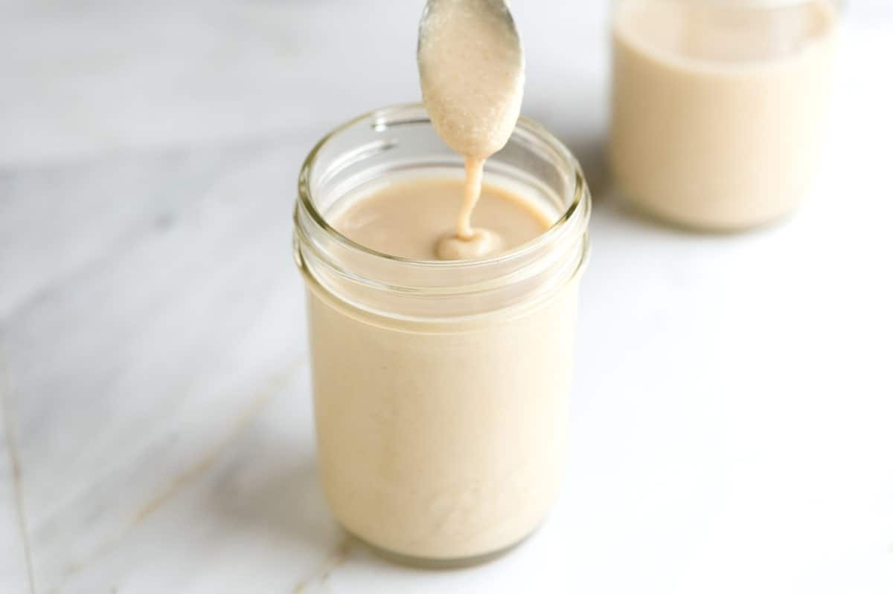

Tahini

Description
Tahini is a paste made from sesame seeds and is a staple in many cuisines, especially in the Mediterranean and the Middle East.
It’s vegan, gluten-free, tastes nutty, and is simple to make.
Would you like to find out how to make it at home instead of buying pricey jars at the store?
We’ll show you how you can easily make it at home.
Ingredients
- Sesame seeds — we prefer to use hulled sesame seeds.
Most often, we will lightly toast the seeds to bring out some of their natural nuttiness,
but you can skip this step alltogether if you’d like.
- Oil — To help the tahini turn into a creamy smooth paste, we add a few tablespoons of neutral-flavored oil.
A variety of oils work, try avocado oil, light and fruity olive oil, vegetable oil, and grape seed oil.
- Salt — is an optional ingredient, but I always use it. It just makes the tahini taste better.
Steps
- Toast the sesame seeds. I love toasting the sesame seeds before making the tahini. The flavor is far superior this way.
If you plan to toast the seeds, we recommend doing so on the stovetop and not in the oven. Sesame seeds are tiny and so they burn very easily.
To toast the sesame seeds, I throw them into a wide, dry saucepan over medium-low heat then stir constantly with a spoon until the seeds darken
ever so slightly in color and become fragrant.
- Process the sesame seeds until crumbly. When the sesame seeds have cooled, we throw them into the bowl of our food processor,
shut the lid then process until a crumbly paste begins to form.
- Add oil and process into a smooth cream. To help the tahini turn into an extra smooth paste, we add a few tablespoons of neutral-flavored oil.